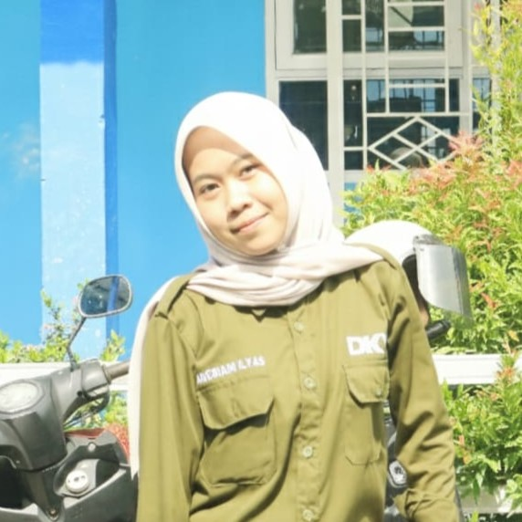
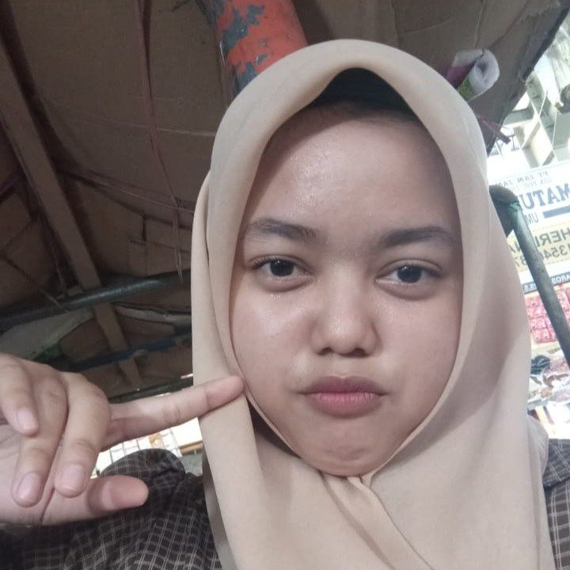
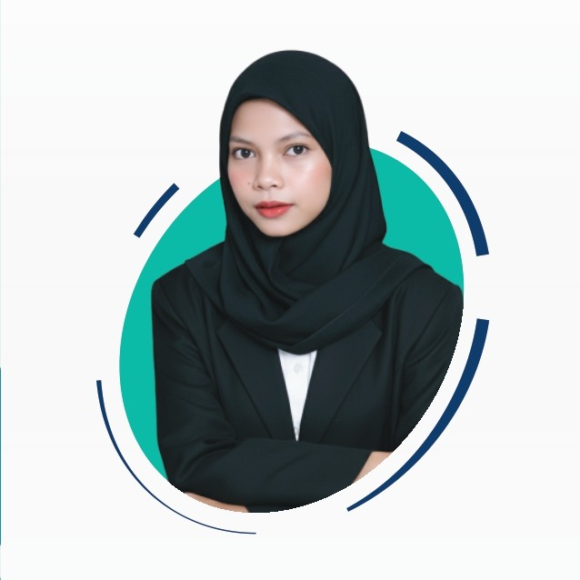
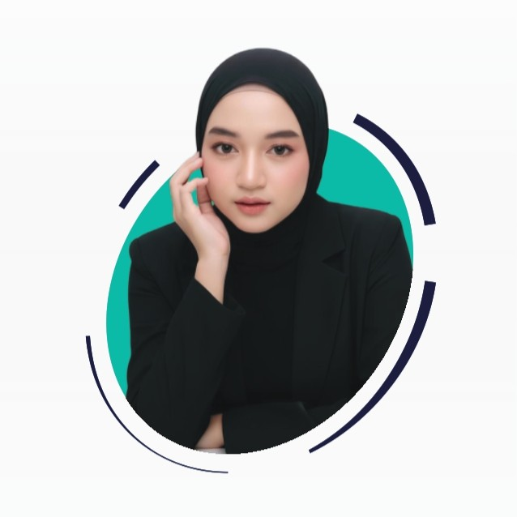
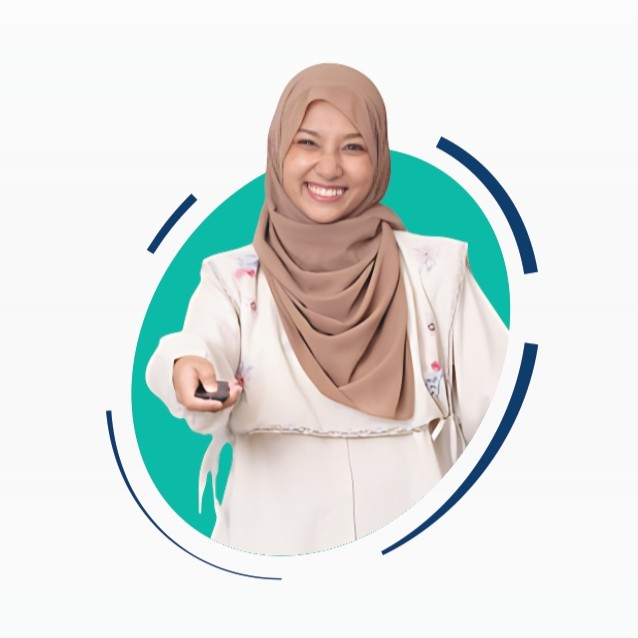
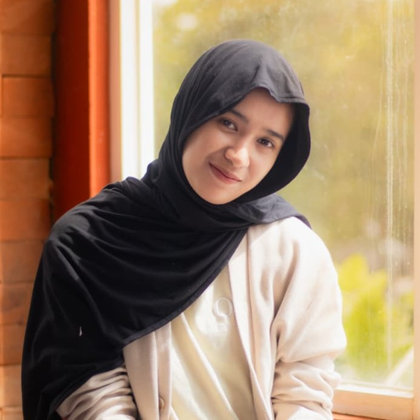
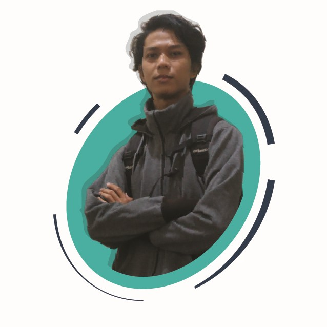
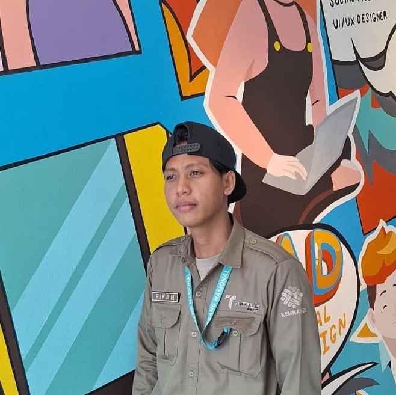

Profil Turikale Print
Turikale Print hadir sebagai solusi cetak untuk kebutuhan UMKM, bisnis, dan personal di Maros dan sekitarnya.
Total Pesanan
500+ Selesai
Pelanggan Aktif
50+ Perbulan
Rating Google
4.9 Verified
Tentang Perusahaan
Lebih dari 5 tahun melayani masyarakat Maros — dari bisnis keluarga kecil hingga percetakan digital yang dipercaya instansi dan UMKM.
Turikale Print didirikan sebagai bisnis keluarga, melayani kebutuhan fotokopi, pengetikan, dan ATK di Kabupaten Maros.
Perusahaan resmi berbadan hukum sebagai CV. Opu Barakati Jaya pada 29 Juni 2020, berfokus pada jasa percetakan dan penggandaan dokumen.
Turikale Print memperluas layanan ke Digital Printing — spanduk, stiker, cetak instansi dan UMKM, termasuk e-katalog pemerintah.
Rebranding identitas Turikale Print dan pendirian PT. Barakati Daya Hutama (Barakati.HUB) untuk pengembangan sumber daya manusia.
Lebih dari 500 pesanan selesai, 50+ pelanggan aktif per bulan, dan rating 4.9★ di Google — melayani UMKM, instansi, dan masyarakat Maros.
Andry Ridwan
Pemilik Toko
Andry Ridwan merupakan pendiri CV Opu Barakati Jaya sekaligus penggagas Turikale Print. Melalui komitmen pada kualitas dan pelayanan, beliau mengembangkan Turikale Print menjadi layanan percetakan yang dipercaya oleh masyarakat dan pelaku UMKM di Maros.
Tim Kami
Kekuatan di balik setiap layanan kami adalah tim yang berdedikasi dan ahli di bidangnya.
Suci
Desainer & Admin
Adit
Desainer & Admin
Praktek Kerja Lapangan (PKL)
Turikale Print menerima siswa Praktik Kerja Lapangan (PKL) sebagai bagian dari komitmen dalam mendukung pendidikan dan pengembangan keterampilan. Siswa akan terlibat langsung dalam proses desain, produksi, hingga pelayanan, sehingga mendapatkan pengalaman kerja nyata di dunia percetakan.
SMKN 1 Maros
Rezky
Desain Komunikasi Visual

SMKN 1 Maros
Anggi
Desain Komunikasi Visual

SMKN 1 Maros
Pute
Desain Komunikasi Visual
SMKN 1 Maros
Salwa
Desain Komunikasi Visual
Program Magang Nasional
CV Opu Barakati Jaya menjadi bagian dari Program Magang Nasional Kementerian Ketenagakerjaan Republik Indonesia (Kemnaker), dengan memberikan kesempatan bagi peserta untuk belajar dan mengembangkan kompetensi melalui pengalaman kerja nyata.

Univ. Muslim Indonesia
Dila
Desain Grafis
Univ. Muslim Maros
Ima
Admin

Universitas Bosowa
Lia
Admin

Universitas Tadulako
Nurul
Admin

UIN Alauddin Makassar
Ulfa
Inventory Staff

Univ. Negeri Makassar
Syahrul
Desain Grafis

Univ. Muslim Indonesia
Rifan
Desain Grafis